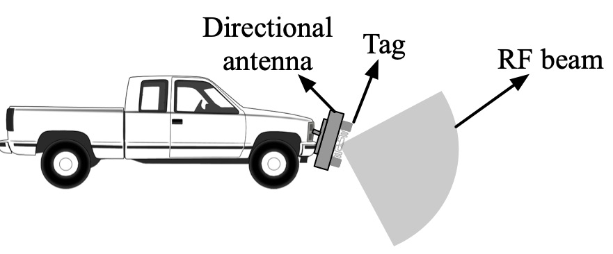
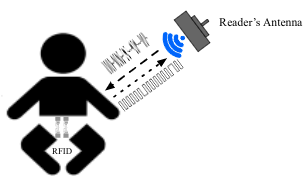

|
Wei Sun
Assistant Professor My research is in the field of computer networks with a special focus on wireless networks and mobile systems. I work on designing and building innovative wireless communication and sensing systems by applying expertise in signal processing, machine learning, optimization, and hardware system implementation to tackle hard technical and societal problems, from designing the hardware and software systems to the deployment and evaluation of these systems for real-world applications in human health sensing, intelligent vehicles, sustainability, and powerline. |
Selected Publications ( see all )

|
Do We Really Need to Design New Byzantine-robust Aggregation Rules?
Minghong Fang, Seyedsina Nabavirazavi, Zhuqing Liu, Wei Sun, Sundararaja Sitharama Iyengar, Haibo Yang NDSS 2025 |
|  |
On the Feasibility of Securing Vehicle-Pavement Interaction
Wei Sun, Kannan Srinivasan ACM IMWUT/Ubicomp 2022 |

|
Embracing Collisions to Increase Fidelity of Sensing Systems with COTS Tags
Jiaqi Xu, Wei Sun, Kannan Srinivasan ACM IMWUT/Ubicomp 2021 |
|  |
Healthy Diapering with Passive RFIDs for Diaper Wetness Sensing and Urine pH Identification
Wei Sun, Kannan Srinivasan ACM MobiSys 2021 |